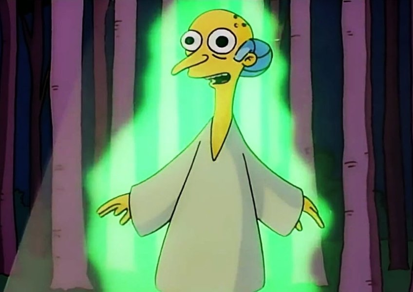

<mat-toolbar color="primary">
  
  <span>SortizM Dev's Website</span>
  <span class="example-spacer"></span>
  <div class="buttonsToolbar">
    <button mat-button aria-label="Home button">Home</button>
    <button mat-button aria-label="Contact button"><a href="/contact">Contact</a></button>
  </div>
</mat-toolbar>
<!-- 
<div class="sidenav">
    <a href="/"><mat-icon aria-hidden="false" aria-label="Example home icon" fontIcon="home"></mat-icon> Home</a>
    <a href="#"><mat-icon>contact_support</mat-icon> Contact</a>
</div> -->
